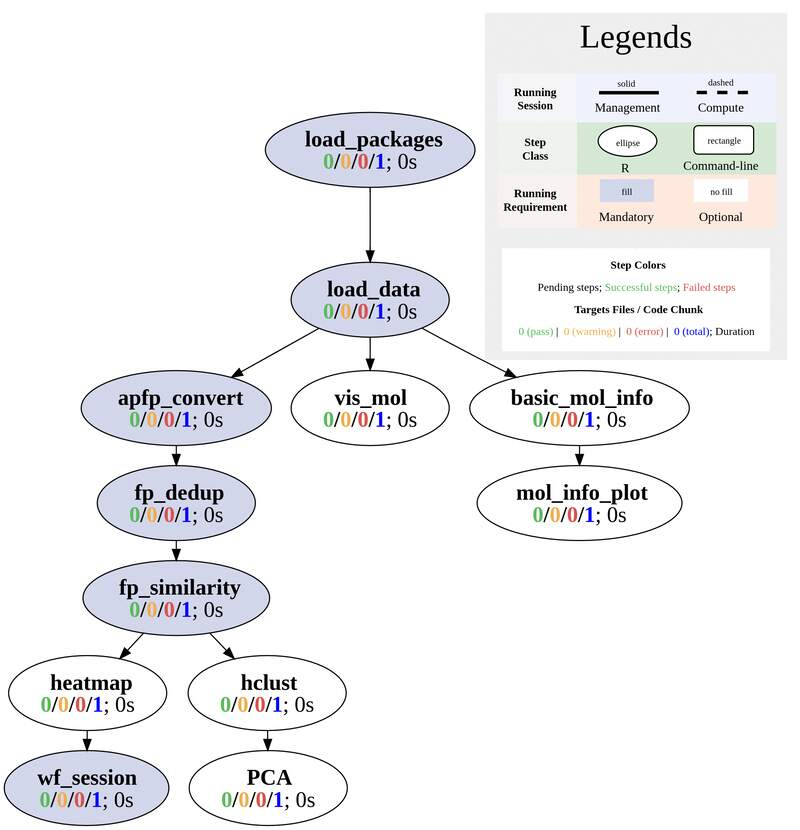
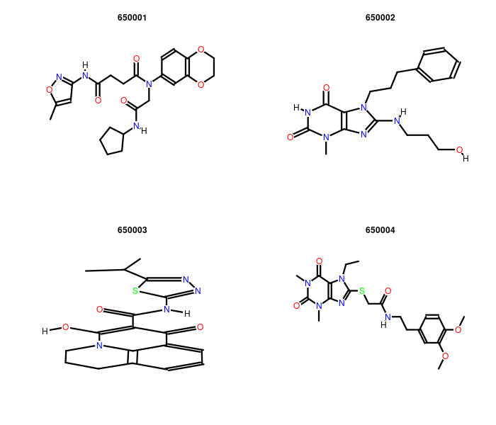
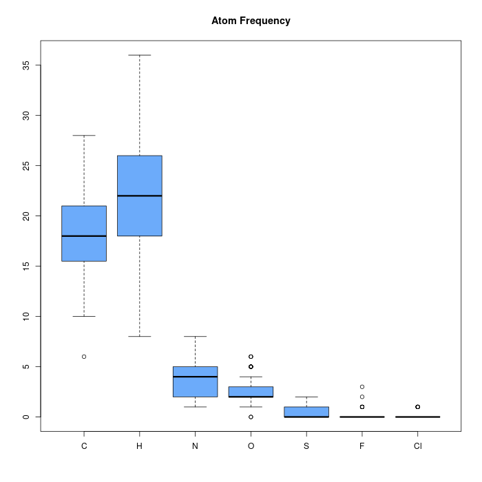
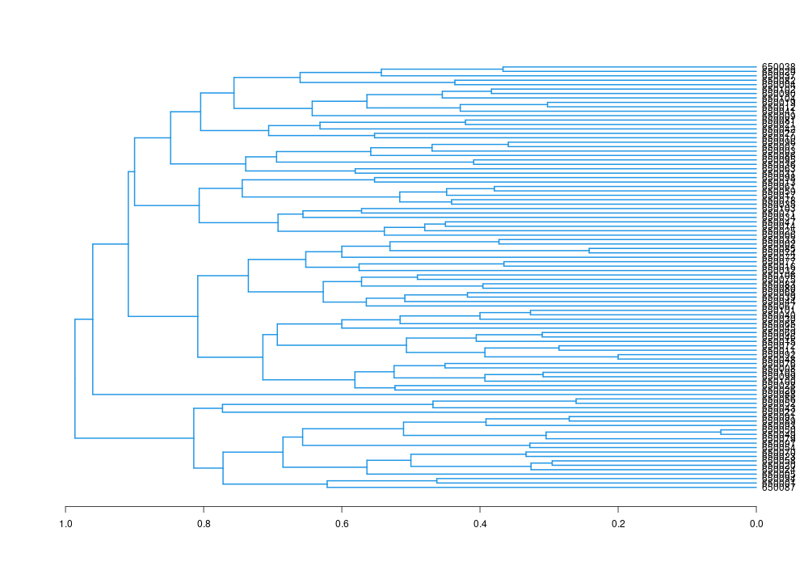
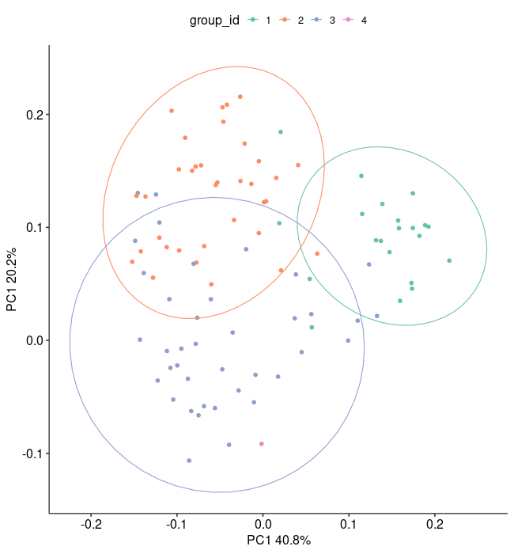
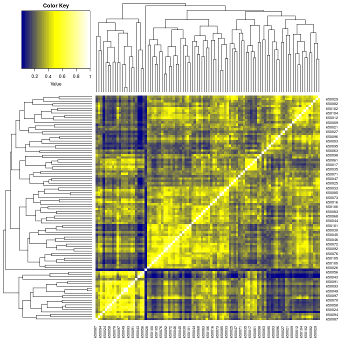

vignettes/SPcheminfo.Rmd
SPcheminfo.RmdThis section provides general description and how to use this cheminformatics workflow. In the actual analysis report, this section is usually removed.
This cheminformatics workflow template is based on the ChemmineR package and should be downloaded from Bioconductor before running the workflow. This template is a workflow that does:
There is no other command-line software required in this workflow.
All are written in R (Linewise) steps.

Users want to provide here background information about the design of their cheminformatics project.
This report describes the analysis of a cheminformatics project studying drug …
systemPipeR workflows can be designed and built
from start to finish with a single command, importing from an R Markdown
file or stepwise in interactive mode from the R console.
This tutorial will demonstrate how to build the workflow in an
interactive mode, appending each step. The workflow is constructed by
connecting each step via appendStep method. Each
SYSargsList instance contains instructions needed for
processing a set of input files with a specific command-line or R
software and the paths to the corresponding outfiles generated by a
particular tool/step.
To create a Workflow within systemPipeR, we can
start by defining an empty container and checking the directory
structure:
library(systemPipeR)
sal <- SPRproject()
salThis is an empty template that contains only one demo step. Refer to our website for how to add more steps. If you prefer a more enriched template, read this page for other pre-configured templates.
Molecules can be loaded or downloaded. This example dataset has 100 molecules.
# Here, the dataset is downloaded. If you already have the
# data locally, change URL to local path.
appendStep(sal) <- LineWise(code = {
sdfset <- read.SDFset("http://faculty.ucr.edu/~tgirke/Documents/R_BioCond/Samples/sdfsample.sdf")
# rename molecule IDs by IDs in the header. If your
# molecules' header does not have ID or not unique,
# remove following code and use the default IDs
cid(sdfset) <- makeUnique(sdfid(sdfset))
}, step_name = "load_data", dependency = "load_packages")
appendStep(sal) <- LineWise(code = {
png("results/mols_plot.png", 700, 600)
# Here only first 4 are plotted. Please choose the ones
# you want to plot.
ChemmineR::plot(sdfset[1:4])
dev.off()
}, step_name = "vis_mol", dependency = "load_data", run_step = "optional")
Compute some basic molecule information and store to file, such as atom frequency matrix, molecular weight and formula.
appendStep(sal) <- LineWise(code = {
propma <- data.frame(MF = MF(sdfset), MW = MW(sdfset), atomcountMA(sdfset))
readr::write_csv(propma, "results/basic_mol_info.csv")
}, step_name = "basic_mol_info", dependency = "load_data", run_step = "optional")The information can be visualized, for example, a boxplot of atom frequency.
appendStep(sal) <- LineWise(code = {
png("results/atom_req.png", 700, 700)
boxplot(propma[, 3:ncol(propma)], col = "#6cabfa", main = "Atom Frequency")
dev.off()
}, step_name = "mol_info_plot", dependency = "basic_mol_info",
run_step = "optional")
Tanimoto similarity requires molecules to be converted into searchable format. In this workflow, either atom pair (AP) or fingerprint (FP) should be used as input. This step convert SDF molecules to these formats.
appendStep(sal) <- LineWise(code = {
apset <- sdf2ap(sdfset)
fpset <- desc2fp(apset, descnames = 1024, type = "FPset")
# save them to a file so they can be loaded directly
# next time
readr::write_rds(apset, "results/apset.rds")
readr::write_rds(fpset, "results/fpset.rds")
}, step_name = "apfp_convert", dependency = "load_data")When molecules are converted to AP/FP, there is chance some very similar molecules end up with idenitical AP/FP, for example some stereoisomers. This is the shortness of these standardization methods. For the downstream clustering part, we need to remove the AP/FP duplicated ones. In this workflow, FPset is used for similarity and clustering computation, FP deduplication is demonstrated here. It will be very similar for AP.
After the similarity computation, we can do some clustering. In this step, hierarchical clustering (hclust) is performed.
appendStep(sal) <- LineWise(code = {
hc <- hclust(as.dist(1 - simMAfp))
png("results/hclust.png", 1000, 700)
plot(as.dendrogram(hc), edgePar = list(col = 4, lwd = 2),
horiz = TRUE)
dev.off()
# to see the tree groupings, one need to cut the tree,
# for example, by height of 0.9
tree_cut <- cutree(hc, h = 0.9)
grouping <- tibble::tibble(cid = names(tree_cut), group_id = tree_cut)
readr::write_csv(grouping, "results/hclust_grouping.csv")
}, step_name = "hclust", dependency = "fp_similarity", run_step = "optional")
With the group information, directly plotting the hclust does not look nice. We can use other methods to visulize the grouping. Here, PCA is used.
appendStep(sal) <- LineWise(code = {
library(magrittr)
library(ggplot2)
# simMAfp is already 0-1 value, no need to normalize
# again
mol_pca <- princomp(simMAfp)
# find the variance
mol_pca_var <- mol_pca$sdev[1:2]^2/sum(mol_pca$sdev^2)
# plot
png("results/mol_pca.png", 650, 700)
tibble::tibble(PC1 = mol_pca$loadings[, 1], PC2 = mol_pca$loadings[,
2], group_id = as.factor(grouping$group_id)) %>%
# here only group labels are used to color, if you
# have experimental conditions or drug types, the
# coloring or shaping will be more meaningful.
ggplot(aes(x = PC1, y = PC2, color = group_id)) + geom_point(size = 2) +
stat_ellipse() + labs(x = paste0("PC1 ", round(mol_pca_var[1],
3) * 100, "%"), y = paste0("PC1 ", round(mol_pca_var[2],
3) * 100, "%")) + ggpubr::theme_pubr(base_size = 16) +
scale_color_brewer(palette = "Set2")
dev.off()
}, step_name = "PCA", dependency = "hclust", run_step = "optional")
Alternatively, we can plot a heatmap to see the similarities between molecules.
appendStep(sal) <- LineWise(code = {
library(gplots)
png("results/mol_heatmap.png", 700, 700)
heatmap.2(simMAfp, Rowv = as.dendrogram(hc), Colv = as.dendrogram(hc),
col = colorpanel(40, "darkblue", "yellow", "white"),
density.info = "none", trace = "none")
dev.off()
}, step_name = "heatmap", dependency = "fp_similarity", run_step = "optional")
appendStep(sal) <- LineWise(code = {
sessionInfo()
}, step_name = "wf_session", dependency = "heatmap")For running the workflow, runWF function will execute
all the steps store in the workflow container. The execution will be on
a single machine without submitting to a queuing system of a computer
cluster.
sal <- runWF(sal)To check command-line tools used in this workflow, use
listCmdTools, and use listCmdModules to check
if you have a modular system.
The following code will print out tools required in your custom SPR project in the report. In case you are running the workflow for the first and do not have a project yet, or you just want to browser this workflow, following code displays the tools required by default.
if (file.exists(file.path(".SPRproject", "SYSargsList.yml"))) {
local({
sal <- systemPipeR::SPRproject(resume = TRUE)
systemPipeR::listCmdTools(sal)
systemPipeR::listCmdModules(sal)
})
} else {
cat(crayon::blue$bold("Tools and modules required by this workflow are:\n"))
cat(c("No other tool is required"), sep = "\n")
}## Tools and modules required by this workflow are:
## No other tool is requiredThis is the session information for rendering this report. To access
the session information of workflow running, check HTML report of
renderLogs.
## R version 4.3.1 (2023-06-16)
## Platform: x86_64-pc-linux-gnu (64-bit)
## Running under: Ubuntu 20.04.6 LTS
##
## Matrix products: default
## BLAS: /usr/lib/x86_64-linux-gnu/blas/libblas.so.3.9.0
## LAPACK: /usr/lib/x86_64-linux-gnu/lapack/liblapack.so.3.9.0
##
## locale:
## [1] LC_CTYPE=en_US.UTF-8 LC_NUMERIC=C
## [3] LC_TIME=en_US.UTF-8 LC_COLLATE=en_US.UTF-8
## [5] LC_MONETARY=en_US.UTF-8 LC_MESSAGES=en_US.UTF-8
## [7] LC_PAPER=en_US.UTF-8 LC_NAME=C
## [9] LC_ADDRESS=C LC_TELEPHONE=C
## [11] LC_MEASUREMENT=en_US.UTF-8 LC_IDENTIFICATION=C
##
## time zone: America/Los_Angeles
## tzcode source: system (glibc)
##
## attached base packages:
## [1] stats graphics grDevices utils datasets
## [6] methods base
##
## other attached packages:
## [1] BiocStyle_2.28.0
##
## loaded via a namespace (and not attached):
## [1] crayon_1.5.2 vctrs_0.6.2
## [3] cli_3.6.1 knitr_1.42
## [5] rlang_1.1.1 xfun_0.39
## [7] stringi_1.7.12 purrr_1.0.1
## [9] textshaping_0.3.6 jsonlite_1.8.4
## [11] glue_1.6.2 rprojroot_2.0.3
## [13] htmltools_0.5.5 formatR_1.14
## [15] ragg_1.2.5 sass_0.4.5
## [17] rmarkdown_2.21 evaluate_0.20
## [19] jquerylib_0.1.4 fastmap_1.1.1
## [21] lifecycle_1.0.3 yaml_2.3.7
## [23] memoise_2.0.1 bookdown_0.33
## [25] BiocManager_1.30.21.1 stringr_1.5.0
## [27] compiler_4.3.1 codetools_0.2-19
## [29] fs_1.6.2 rstudioapi_0.14
## [31] systemfonts_1.0.4 digest_0.6.31
## [33] R6_2.5.1 magrittr_2.0.3
## [35] bslib_0.4.2 tools_4.3.1
## [37] pkgdown_2.0.7 cachem_1.0.8
## [39] desc_1.4.2